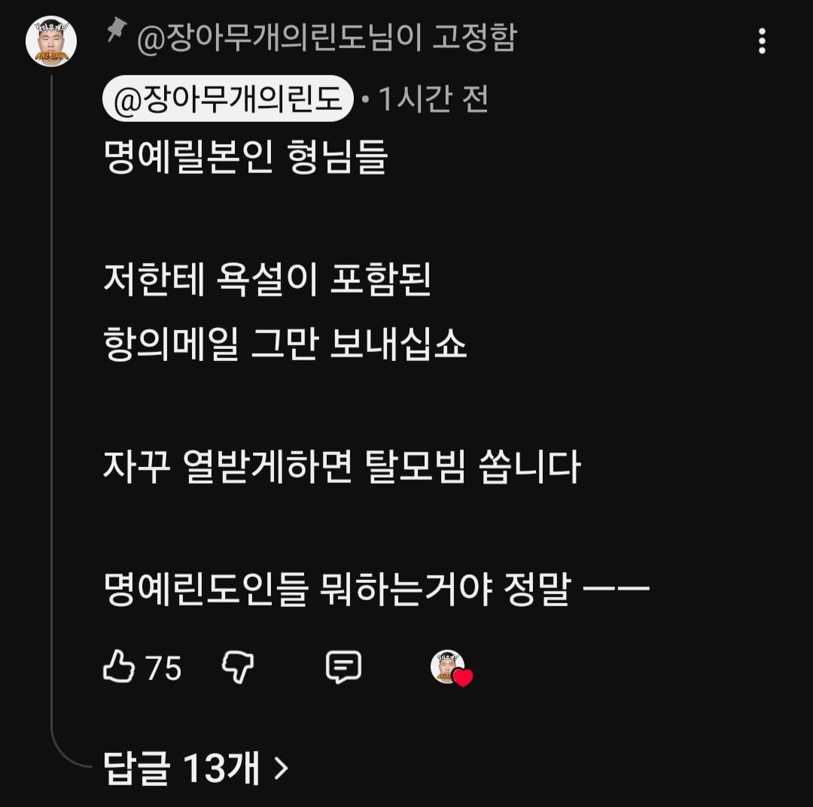

요즘 컨텐츠로 일본것도 올리고 있는데 위생조진거 가지고 드립쳤다가 메일 받음

요즘 컨텐츠로 일본것도 올리고 있는데 위생조진거 가지고 드립쳤다가 메일 받음
라따뚜이, Japan
바이오 프로틴, Japan
바이오 쏠트, Japan
ㄹㅇ이가
원종단이라는 것이다
ㅅㅂㅋㅋ
원종이들 팩트 폭격에 화났나보네 라따뚜이들 숨기고 싶었나
머리 마사지 받았는데 머리크다고 추가금 받은게 개 웃겼으 ㅁㅋㅋㅋㅋ
명예 일본인들 ㄷㄷ
가서보니 일본거 올ㄹ온게 없는데? 라이브인가
쇼츠구나
https://youtube.com/shorts/P6X7PHbSJ-U

어이어이 일본 위생이 씹창일리가없잖아
칙쇼 갓본이 그럴리가 없다고!!
대황제국의 위상을 실추 시키는 영상을 올리니까 무료변호사들이 가만있을리 있나
명예 릴본인들 항의 메일 받은거 리뷰하면 그것도 개꿀잼 영상각일건데
일본 음식점 위생 생각보다 존나 심각한곳 개많음 ㅋㅋ
일본인들은 그걸 맛의 원천이라 생각하고 자랑스러워 하는데 시발 불판에 몇년이나 박혀있는지 모를 때가 있고
그 때가 묻은 고기를 좋다고 먹으니...
씨간장마냥? 씨간장도 위생 관련해서 말 많던데
오늘도 평화로운 릴뽕
뭔 일본을 돌판 팬덤처럼 빨고있네 ㅋㅋ
원종단은 한결같구만
세대가 바뀌어도 여전하겠지 ㅋㅋㅋㅋ
일본 위생 더러운건 가보면 다 보이는데
정말 모두가 한결같이 흐린눈을 함ㅋㅋㅋㅋ
한국에서 깔끔 떨던 애들도 일본 가면 관대해짐
몇십년 된 노포라고 갔는데 살벌하더라ㅋㅋㅋㅋㅋㅋ
그런데 가는거 아님 ㅋㅋㅋ
그나마 위생관리 되는 신규매장이나 오픈키친매장, 체인점 위주로 가야됨
노포 = 렄키 린도 이건 진짜 어느동네를 가도 동일함
지랄하지마 !!!!!!!!!!!!!!!!!!!!!!!!!!!!!!!
씨국물이라고 !!!!!!!!!!!!!!!!!!!!!!!!!!!!!!!!!!!!!!!!!!!!!!!!!!!!!!!!!!!!!!!!!!!!!
한국 따위에는 없는 장인 정신이라고 !!!!!!!!!!!!!!!!!!!!!!!!!!!!!!!!!!!!!!!!!!!!!!!!!!!!!!!!!!!!!!!!!!!!!!!!!!!!!!!!!!!!!!!!!!!!!!!!!!!!!!!!!
명예 린도라서 유쾌함까진 못가졌구만
TV에서 전통의 일본 오뎅노포라고 촬영하는데 린도색 기름에 튀기던거밖에 기억이 안남ㅋㅋㅋ
일본도 노포나 되게 오래된 어르신 가게 보면 위생 심각함
팩트 말하는데 왜 명예시민짓을 하냐고ㅋㅋ
릴본 릴본 릴본~
나도 일본좋아해서 자주가지만
일뽕들은 극혐함 ㅋㅋ 시발 무슨 일본만 붙히면 전부다 좋다고 지랄하냐고 ㅋㅋ
일본도 더러운곳은 밑도끝도없지 존나게 더러운데 ㅋㅋ
라키 린도
일본 노포 더러운 곳 많긴 하더라
명예릴본인ㅋㅋㅋ 이런 새끼들이 옛날에 태어났으면 매국하고 어디서 앞잽이 안경 쓰고 나타나서 갓본 찬양 했겠지 ㅋㅋㅋ
참 재밌는 족속들이야 저런 명예일본인 애들 극성이 워낙 심해서 때문에 진짜 잘못된 정보있어도 도매금 취급받을까봐 정정하기도 꺼려질 정도
제작년인가 긴자에서 닭꼬치 체인점에 가서 맥주나 조지려고 들어갔는데 테이블 졸라 끈적한거랑 때탄거 까진 참아 볼만 했는데 바퀴벌래 대이동 하는건 도저히 못참겠어서 걍 나옴ㅋㅋㅋ 긴자면 번화가일텐데도 위생이 이따위임
우라늄 한도초과를 겪어본 나라인 일본에서
그깟 철분 좀 나온다고 눈 하나 깜짝일 것 같아?
절대 아니라고 봄 ㅎㅎ
일본 이미지 메이킹 존나 잘되서 위생 개판인집도 좋다고 존나 빨아줌ㅋㅋㅋㅋㅋ
원종이들은 정작 일본 안가봤으니까 ㅋㅋ
Place, Japan 효과는 실존한다